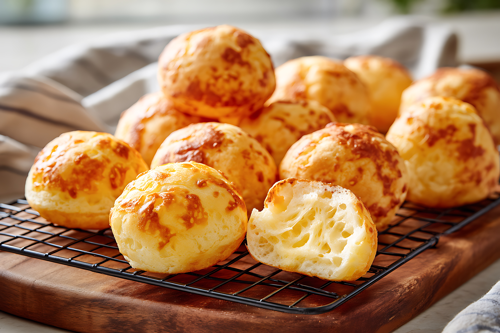

Like many great foods in the Western Hemisphere, pão de queijo has its roots in the culinary creations of African slaves. Slaves were often deprived of the 'edible' cuts of the animal and vegetable. Regarding the animal, the tail, the head, the stomach and similar anatomy was discarded as unusable by the landowners (think 'feijoada', another Brazilian specialty that has similar beginnings). The slaves, having mouths to feed, made due with the discards.
Manioc (a root plant also know as yuca or cassava, and is better known in the US supermarkets as tapioca) was, and still is, a common staple during the Portuguese colonization of Brazil. This root was peeled, grated, soaked and dried in order to make a wide variety of what are now traditional Brazilian foods.
The residue of this process, considered inedible by the landowners and others that were better off, was a fine white powder, or starch. The slaves gathered this residue, made balls and baked them. Of course, no cheese or milk was added at this point in history. In short, it was baked starch.
At the end of the 19th century, after slavery ended, other foods were made available to the Afro-Brazilian population. And in the State of Minas Gerais, the center of the dairy production in Brazil, cheese and milk were added to the balls of starch. So, with a combination of Afro-Brazilian ethnicity and the agricultural geography of Minas Gerais, pão de queijo as we now all know it, came to be.